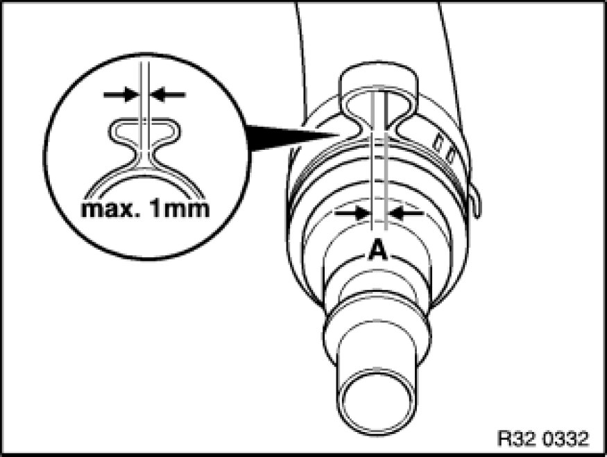

Instructions for Removing and Installing Ear Clips
32 41 ... - Instructions for removing and installing ear clips

Special tools required:
- 32 1 260 32 1 260 Pliers
Note:
The work steps are show on assorted components.
Ear clip must always be replaced.
To remove an ear clip, place special tool 32 1 260 32 1 260 Pliers at right angles to ear and cut ear open.
The ear clip can be fitted not only axially but also radially after the hook fastener has been opened.
Attach hook fastener and press ear together with special tool 32 1 260 32 1 260 Pliers.
Side cutter of special tool 32 1 260 32 1 260 Pliers can be used in areas which are difficult to access.

Important!
Gap (A) max. 1 mm!